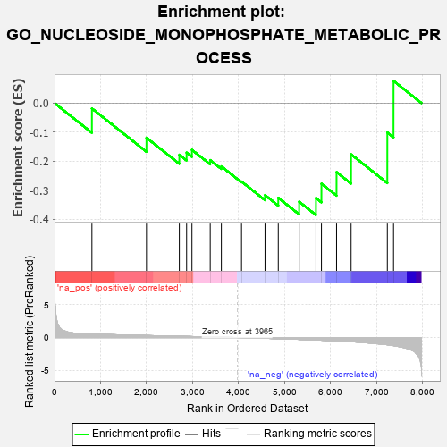
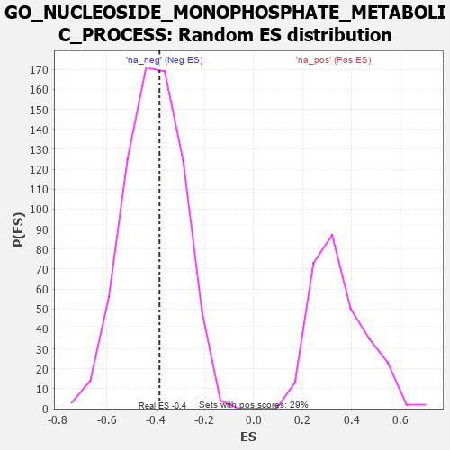

| | | Dataset | 7d |
| Phenotype | NoPhenotypeAvailable |
| Upregulated in class | na_neg |
| GeneSet | GO_NUCLEOSIDE_MONOPHOSPHATE_METABOLIC_PROCESS |
| Enrichment Score (ES) | -0.38482198 |
| Normalized Enrichment Score (NES) | -0.93755215 |
| Nominal p-value | 0.57482517 |
| FDR q-value | 0.91623116 |
| FWER p-Value | 1.0 |
Table: GSEA Results Summary

Fig 1: Enrichment plot: GO_NUCLEOSIDE_MONOPHOSPHATE_METABOLIC_PROCESS
Profile of the Running ES Score & Positions of GeneSet Members on the Rank Ordered List
| PROBE | GENE SYMBOL | GENE_TITLE | RANK IN GENE LIST | RANK METRIC SCORE | RUNNING ES | CORE ENRICHMENT | | 1 | UCK2 | | | 812 | 0.529 | -0.0185 | No |
| 2 | PRPS1 | | | 1997 | 0.305 | -0.1191 | No |
| 3 | UCKL1 | | | 2711 | 0.197 | -0.1776 | No |
| 4 | DCTD | | | 2869 | 0.171 | -0.1703 | No |
| 5 | DUT | | | 2985 | 0.152 | -0.1608 | No |
| 6 | PPAT | | | 3382 | 0.091 | -0.1961 | No |
| 7 | UPP2 | | | 3624 | 0.056 | -0.2176 | No |
| 8 | AMPD2 | | | 4062 | -0.017 | -0.2698 | No |
| 9 | PNKP | | | 4572 | -0.111 | -0.3164 | No |
| 10 | DLG1 | | | 4860 | -0.169 | -0.3257 | No |
| 11 | RAD50 | | | 5314 | -0.276 | -0.3391 | Yes |
| 12 | PRPS2 | | | 5679 | -0.370 | -0.3264 | Yes |
| 13 | ADA | | | 5798 | -0.405 | -0.2772 | Yes |
| 14 | DLG2 | | | 6126 | -0.513 | -0.2373 | Yes |
| 15 | UMPS | | | 6442 | -0.637 | -0.1763 | Yes |
| 16 | LRGUK | | | 7229 | -1.101 | -0.1012 | Yes |
| 17 | LHPP | | | 7364 | -1.230 | 0.0763 | Yes |
Table: GSEA details [plain text format]

Fig 2: GO_NUCLEOSIDE_MONOPHOSPHATE_METABOLIC_PROCESS: Random ES distribution
Gene set null distribution of ES for GO_NUCLEOSIDE_MONOPHOSPHATE_METABOLIC_PROCESS